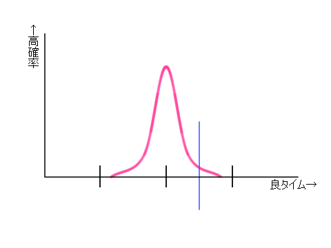
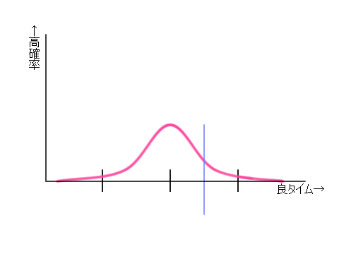
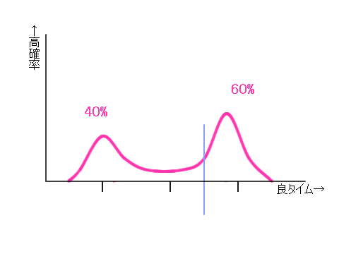
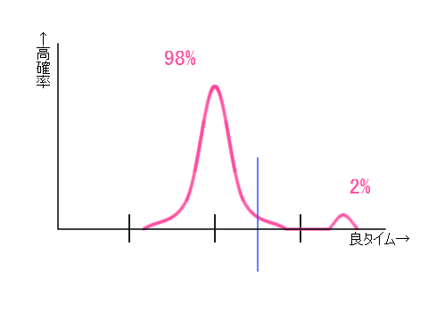

|
▲ 筆者のメインページへ ▲ 筆者の日記へ / 自己紹介 |
スポンサーサイト広告（提供：Amazon） |
2013年夏現在、ロールプレイングゲームの短時間攻略に挑むプレイヤーは多く、とくにRTA（リアルタイムアタック）は人気があります。日々、新しい戦略が考案されています。
ある戦略でプレイした場合の、目安となるタイムの表現としてよく使われるのは次のような形でしょう。
「この戦略は、7時間±15分の範囲に7割のプレイが収まる」
期待されるタイムの分布を「中央値」と「幅」の2つの数値で表しています。しかし、プレイ目的も、それに特化した戦略も多岐にわたる現代においては、この2つだけでは不十分です。
筆者は、この2つに加え「突破率」を用いることで、現代RTA戦略をより明快に議論できると考えています。
当ページへのリンクはご自由にどうぞ。管理人への連絡も必要ありません。
本ページでは、「あらゆる状況への対処を記述できると仮定し、その記述を戦略と呼ぶ」ことにします。
戦略を参照しながら、神様がミスなく理想的にプレイした場合のタイムを議論していると思ってください。
実際のプレイには多くの要素が影響し、「戦略」だけでタイムが決まるわけではなく、プレイヤーの性格や相性と切り離した戦略の議論は限界がありますが、ここでは理想化して、切り離せると仮定します。
さて、例として3つの戦略があるとして、その確率分布グラフを見ていきましょう。
確率分布には、「戦略とタイムの関係」がすべて表現されています。この確率分布を正確に知るのは難しいですが、多くの場合その必要はありません。大切なのは、「どんな形をしていそうか」というイメージです。議論のとき、このイメージが共有できれば、数値だけでも意思疎通は十分に可能です。
|  |
【図1】 タイムのばらつきが少ない戦略です。 数値は次のようにおいてみます ・7時間±15分に、7割のプレイが収まる ・6時間30分を切れる確率は3% | |
|  |
【図2】 タイムのばらつきが大きい戦略です。 数値は、図1との関連から次のようになります ・7時間±30分に、7割のプレイが収まる ・6時間30分を切れる確率は15% | |
|  |
【図3】 タイムが2つの典型的なケースに割れる戦略のようです。「丁半博打」のような要素を取り込んだ戦略と思われます。 数値は次のようになるでしょう。 ・7時間±50分に、7割のプレイが収まる
・6時間30分を切れる確率は50%↑この値に意味があるのでしょうか？ |
【図3】のケースでは「突破率」を持ち出すとすっきりします。
赤地のところを、次のように言い換えた方がよいでしょう。
・狙ったケースに入るのは6割 ←これが突破率
・狙ったケースに入った場合には、6時間10分±20分に、7割のプレイが収まる
なお、ふつう、このような戦略をとるとき興味があるのは、狙ったケースに「入れた」場合にどうなるのかであり、グラフ右側の山です。「突破率」を明示的に付け加えることで、右の山だけを切り離した議論ができます。
もちろん、左の山についても切り離した議論は可能です。複数の山がある場合も同様です。このような場合は突破率という言葉よりも「分岐率」などがしっくりくるかもしれません。言葉は何でも構いません。大切なのは分布をいくつかに分けることです。
さて問題は、「突破率」「中央値」「幅」といった数値を、どうやって算出するかです。
これについて、まずは主観で値を提示してよいと筆者は考えます。
戦略を議論するという観点で考えると、いちばん大切なのは、これらの値が存在することです。主観での数値でも、何もないよりは、はるかに議論しやすいです。
その次の段階として、値の根拠のグレードアップが来ます。確率計算、シミュレーション、複数回プレイして統計を取る、など、グレードアップの方法はいくつかあります。
この過程で、当初の値が修正されたり、議論の結論が覆ることがあると思いますが、それが健全な議論だと思います。
このように書くと、主観は、精度が悪く信用のおけない根拠に感じるかもしれませんが、あながちそうともいえません。
計算やシミュレーションでは、ある要因を見逃したために大きく間違った値が提示されることもありえます。
また、長時間におよぶプレイ全体のタイムの「中央値」「幅」などは、プレイ展開を分析し、ある程度は計算できるにしても、主観を排除することは困難です。
さらに、すこし見方の角度は違いますが、主観で出された値には、戦略家の経験と思想が表れているともいえ、戦略そのものの議論とは別の興味の対象ともなります。
大きく4つの手法を紹介します。
とくに「突破率」に関しては、多くの算出の実例があるので、リンクにて紹介します。
おもにドラクエ5[PS2版]での実例です。リンク先は、ボス名などネタバレが含まれることがあります。
前項で説明した通りです。最も手間がかかりません。
判断に必要となる精度の範囲で計算を行えば、手間はあまりかかりません。客観性もあります。計算方法と、使う基礎パラメータの信憑性に、注意する必要があります。確率計算の知識と技術も必要です。
「主観」と「確率計算」を組みあわせて確率を推定する例がよく見られます。
部分の突破率は主観で出し、その値をもとに、全体の突破率を概算した例もあります。
○
各所の突破率 (5:52プレイ時の戦略)
エトワールさん
◇
各所の突破率、目標タイム達成率、プレイ時間推定(6:22プレイ時の戦略)
右弐
○
各関門の突破率と貴重品消費の見積もり (6:22プレイ時の戦略) たらひろさん
→ データ計算 → ◇
上記データをもとにした全体の突破率計算
右弐
部分の突破率に絞った計算例もあります。
◇
すごろく場 よろずや到達率
右弐
○
カジノの確率 (連射パッドの周期利用)
腹黒パンダさん
ゲーム内の特定の状況と対応戦略をプログラムにして、10万回などといった多数の擬似プレイを行うものです。分岐や繰り返しの多い複雑な処理も扱うことが可能です。プログラミングの知識と技術が要求されます。
○
カジノ突破率(5:46プレイ時の戦略) ページ中段
シミュレータを1000万回実行 ping値さん
○
すごろくクリア確率 （第5問：来場者pdf 3ページ末尾）
2013夏 SFC版ドラゴンクエスト３ リカバリーTA大会 （代表くねおさん）
プレイヤーの影響を受けることを除けば、ある意味、最上のシミュレーションなのですが、いかんせん時間も手間がかかります。また、テストしたい戦略/戦術を固定してプレイすることも必要で、比較的この点に注意された上でのプレイの実例を挙げます。
○
ボス戦の勝率と消耗品
同じボスを50戦したデータ イリアスさん
○
PS2DQ5RTA カジノ未使用 アベレージ重視走
同じ戦略で10回プレイしたデータ たらひろさん
|  |
左は、どんな戦略のグラフでしょうか？
|
そのような方は、本ページの「突破率」にあたる概念は、すでに頭の中に存在していたと思われます。そして「確率分布」の形や「突破率」に対して、自分の許容範囲を設定している、と解釈できます。
このように考えると、いわゆる「運ゲー」というのも、許容範囲の程度問題です。
程度問題ならば、グラフ化や数値化した上で、戦略の評価なり、個々人の嗜好なりを扱った方が混乱は防げます。
RTAプレイヤーが増え、プレイ目的が多様化する中にあって、「戦略」の評価に関する議論がうまくかみ合わないケースも増えてきたように思います。
これは、多様化が悪いわけではなく、その多様化を語る上での「用語の整備」が立ち遅れているためと解釈しており、一石を投じる意図で「突破率」を明示してみました。
「博打/安定」「最速タイム向き/平均向き」などの用語は、対比して語られることが多いですが、背後の確率分布のイメージが共有されているとは言いがたい状況だと思います。【図2】と【図3】のどちらもが、同じ「博打」という言葉で語られてしまえば、議論がかみ合わないのは当然です。本ページが、議論の円滑化と効率化に役立てば、望外の喜びです。
余談ですが、「戦略」ではなく「プレイヤー」を同様に評価できないか、考えてみました。
たとえば対戦RTAでは、プレイヤーの選べる「戦略」は、トランプゲームでいうところの手持ちの「カード」に相当します。この「カード」には、1枚1枚、異なる確率分布グラフが描かれています。相手の出すカードも予想し、自分の勝つ領域が最大となるカード選択を行っていくのが、真に対戦の勝利を目指した「広義の戦略」です。したがって、対戦に向いた単独の「戦略」というのは存在しないといえるでしょう。また、扱えるカードの多いプレイヤーは、それだけ有利になるのは当然です。
このように考えていくと、「プレイヤー」という複雑な対象を、タイムの確率分布で表現することは原理的に不可能と思われます。
そして、それで良いと思います。「戦略」は装備品であり、それを装備して対戦するキャラクターが「プレイヤー」ですから。戦略とプレイヤーを切り離す認識の分化は、今後のRTA界ではさらに進むものと思われ、それは健全な方向であると筆者は考えています。
本文内にリンクを張らせていただきました。有効な研究の数々に、この場を借りて、御礼申し上げます。
|
▲ メインページへ戻る 感想・質問・注文・呪文はこちら⇒掲示板 リンクはご自由にどうぞ | スポンサーサイト広告（提供：Amazon） |